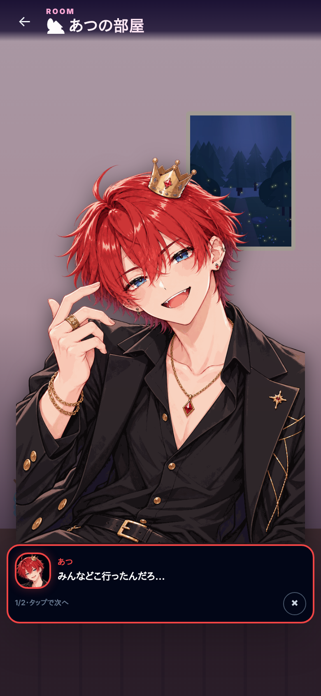
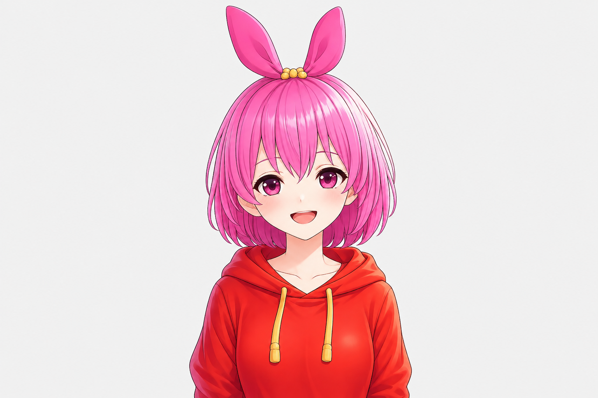
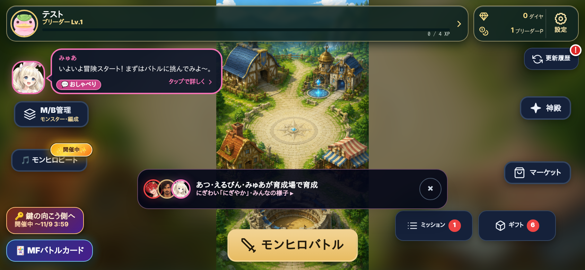

① HOME(縦): 施設に、そこで遊んでいる助手の顔だけ。2つまで+数。家にいる助手は新しい施設「🏡 助手ライフ」に

② 助手ライフ(縦): 入ると町の地図に8人。場所を押すとその場面。下に「今日やれること」1行・下のボタン
🎉 にぎやか ×1.5
③ 場面: 場所の背景に2人の立ち絵。その場で掛け合い → 🤝友情Lv・💗仲良し度(ハナビの演出)→ その場でできること

ひめちん、このタルト半分こしよ♪ あたし、いちごのとこ！
2/3・タップで次へ
④ HOME(横): 同じく施設に顔。札が小さい所は顔1つ+数

⑤ 助手ライフ(横): 地図を横に広げ、右に「今日やれること」
🏡 助手ライフ
夕方 18〜21時・あと1時間で夜・🎉 にぎやか ×1.5